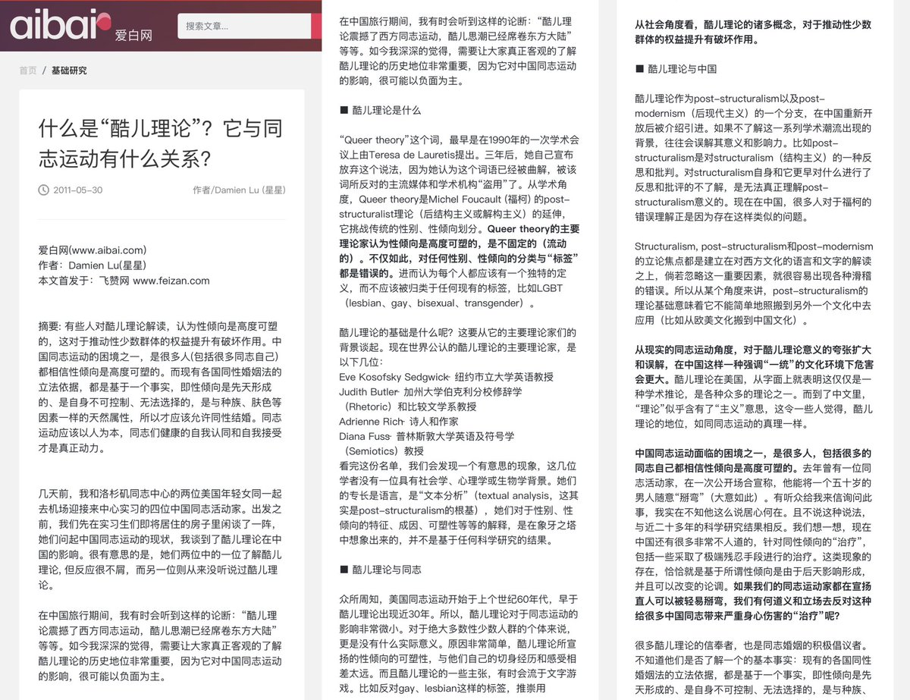

这个问题我倒算是比较熟悉（因为是我导师的领域），之后可能还会详细撰文讲，但如果熟悉国内「酷儿」运动史的话应该会了解，「酷儿」在国内语境的传播是极度性别化和阶级化的，它的引入很大程度上来自女同女权NGO人士（自由派酷儿女权行动派）寻求国际认同的中产体制化需求，但这和国内的许多行动需求又是非常错位的。比如Damien早在2011年就在爱白网发了一篇从男同志运动的角度讲「酷儿」一词的理论限度的文章。此文理所应当地受到了体面中产女权人士的大肆攻击，但我以为这里有许多讲法倒是非常切近。比如按照酷儿理论不设任何身份准入门槛和内部划分的精神，跨女和男娘乃至crossie异装癖看黄男都是酷儿的成员，且男娘很可能因其明确的男性认同和非规范的性别表达显得比希望融入社会的跨女要酷儿太多了。请问这样的理论到底在帮助谁？怎么解决二元或非二元跨无法获得医疗资源的问题？怎么看待异装癖男异性恋，以赤贫状态下的跨女性工作者为代价，解决自己生理需求的问题？怎么看待「酷儿」被海外留子和NGO进步人士（稍微接触过海外「酷儿组织」的朋友应该都知道我在说什么）彻底挪用为一个让中产阶级女性获得社交资源和政治资本，同时以排除「生理男」名义排除跨性别女性的问题？


然后更进一步地说，这些映射还需要考虑语境，有些判断在一些语境下成立，不代表在所有语境中都成立。比如酷儿理论/性别认同理论对“有医疗需求的跨儿”的影响，可能在一个性少数社群已经在公共领域充分伸展其力量的社会中是一个问题，但至少它在国内这个环境和语境下，很难说是一个适时的、有意义的问题